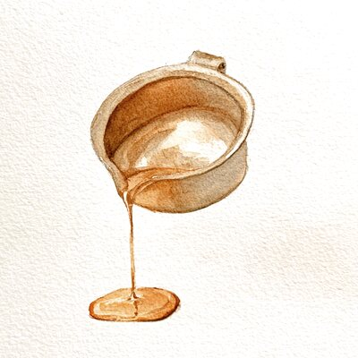
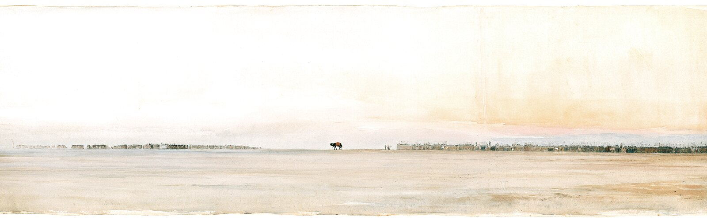

Gold-ruled panels
Nothing floats. Every block of content is a bounded field, closed on all four sides by a rule: hairline, paper gutter, gold band, hairline. The frame is the layout.
An alternative style guide
Every page a leaf: ruled in gold, painted flat, illuminated at the margins.
The Gita reached most of its readers as a manuscript before it was ever a book. This treatment borrows that page — the jadval rules that frame a painting, the flat registers of a Pahari miniature, the vine that runs the outer margin — and holds it to modern reading standards: one column, generous measure, real contrast.
The treatment
Nothing floats. Every block of content is a bounded field, closed on all four sides by a rule: hairline, paper gutter, gold band, hairline. The frame is the layout.
No shadow, no gradient, no depth cue anywhere. Pictures are inlaid into the page rather than lifted above it, and colour arrives as flat registers stacked down the leaf.
The outer margin is not empty space, it is the hashiya: a double rule carrying a gold rosette, running the full height beside the text.
Pigments
Taken from the palette of an eighteenth-century Pahari workshop, and from the cover of the book itself. Gold and lapis are structural; vermilion is the only voice raised.
Paper
#F7EFDE
The ground of every leaf. Warmer than the old cream, so gold sits on it without glaring.
Burnished paper
#EFE3C6
The recessed register. Marks a panel as a distinct field without changing the key.
Gold leaf
#C08A2E
Every rule, every ornament. Flat ochre, never a metallic gradient — gilding on a flat page reads as colour, not shine.
Deep gold
#8A5E1C
The hairline that closes a gold band on both sides. Does the work a border colour usually does.
Lapis
#22406B
The dark register, the colophon, the illuminated initial. Replaces the old near-black brown.
Vermilion
#A8341F
Rubrics, section headings, buttons. The one colour allowed to raise its voice, so it is spent sparingly.
Letterforms
Display and body are both Garamonds, a generation apart: Cormorant’s high contrast carries the titles, EB Garamond’s steadier colour carries the reading. Source Sans handles anything that is a label rather than a sentence.
Display — Cormorant Garamond 600
Titles and register headings. clamp(40–70px), line-height 1.02.
Lede — Cormorant Garamond 500 italic
Strength added to a stressed structure has nowhere to go but into the cracks.
One sentence under a title, set in vermilion. Never two.
Reading — EB Garamond 400
A metal that has been worked hard—rolled, drawn, hammered into shape—carries the memory of that work inside it. The grains are distorted, the internal stresses locked in.
17px at 1.62 for page copy, 19px at 1.66 inside an issue. Measure caps at 660px, about 68 characters.
Rubric — Source Sans 3 600
One Engineering Reflection
12px, 2.6px letter-spacing, uppercase, vermilion. Opens a section the way a rubricator opened a passage — in red.
Illumination
All four are CSS background art built from inline SVG, so they cost no requests, scale without blurring, and need no change to the HTML. The restraint is the point: a fifth ornament would turn a manuscript into wallpaper.
Grain headpiece
Opens a leaf, above the home title and every issue title, never twice on a page. One hexagonal cell with its bonds drawn, dissolving into the cells around it — a grain, which is both metallurgy’s picture of annealed metal and a tessellation, which is what illumination has always been.
Hashiya vine
Fixed in both margins, a rosette every 180px. Withdraws below 1340px, where there is no margin to illuminate.
Lotus rule
Under a register heading and above a pull quote. Closes a thought; never used as a spacer.
Corner floret
One in each corner of a coloured panel, inset 12px — the mark that says this field is finished.
Plates
Nine watercolours, all drawn from the Gita, in two treatments. Every plate is painted on pale paper and composited with mix-blend-mode: multiply, so the paper it was painted on disappears into the paper of the leaf and only the pigment lands. That one decision is what keeps a rectangular JPEG from sitting on the page like a sticker.
They are painted quiet on purpose. These plates share the page with running text, and the regality here comes from the gold rules and the typography — not from the colour of the art. Anything bright enough to pull an eye off a paragraph is wrong for this page however good it looks on its own, so saturation is held back three times over: in the prompt, again on import, and again by the theme, which renders every plate through filter: saturate(var(--plate-mute)). One variable turns the whole set further down.
Dissolved
Margins, spots and inline plates carry no frame. A single radial mask eats the edges of the rectangle and the painting fades out before it reaches the text. Used where the art should feel like part of the paper.


Spots at 86px, masked to a circle, standing in for the numerals on the three home cards — those are three lenses, not three steps, so a number was never the right marker.
Mounted
The wide register plate keeps its edges and takes a gold jadval, with the verse set beneath it. A painting pasted into an album page — which is what a muraqqa leaf is.

The nine
Five tall margin plates — the chariot (1.21), the windless lamp (6.19), the lotus unwetted by water (5.10), the inverted banyan (15.1), the conch Panchajanya (1.15). One wide register plate, the field at first light. Three circular spots: a flame, a crucible pouring, a lotus seen from above. The crucible is the one that is hers rather than the Gita’s, and it earns its place next to One Engineering Reflection.
The paintings shown here are the ones the site is running. They were generated from the prompt pack in assets/img/illustrations/PROMPTS.md and imported with tools/prepare-illustration.sh; the filename is the only wiring, so replacing a painting is a matter of dropping a new file in at the same name.
Hanging a plate in the margin
A page opts into illuminated margins by naming two plates. Nothing else changes, and a page that names none keeps the plain vine.
<style>:root{
--illus-left: url(assets/img/illustrations/margin-chariot.jpg);
--illus-right: url(assets/img/illustrations/margin-lamp.jpg);
}</style>
The jadval
The ruled frame is one border plus three inset shadows — flat rings, no blur, so it reads as ruling rather than depth. Drawn here at four times the size it ships at.
01
Outer hairline in deep gold — the edge of the field.
02
Paper gutter, the width of the hairline times four. The breathing room that keeps the rules from reading as a heavy border.
03
The gold band itself, three pixels at page scale.
04
Inner hairline, closing the band, and then the content.
Components
Buttons
Subscribe to The Human Quests Subscribe
Square, flat vermilion, inset gold rule. No radius and no shadow — a gilded label, not a pill.
Archive row
Why relieving internal stress comes before adding strength—in steel and in people.
Date in the left column as a rubric, title in the display face. The whole row warms on hover.
Illuminated initial
Before we can make such a metal useful again, we anneal it: heat it slowly, hold it, let it cool. Nothing is added. Something is released — and the same component survives the same load it cracked under before.
Gold on lapis, opening the first paragraph of an issue. One per page, applied through ::first-letter so the copy stays plain HTML.
Subscribe
A ruled box, not a rounded field. The button sits inside the rule with a five-pixel inset.
Holding the line
Ornament never carries meaning. Every rosette, rule and floret is decoration only; remove them all and the page still says the same thing in the same order.
Body copy stays on paper. Reading text is always ink on the pale ground. Lapis and vermilion are for titles, rubrics and single lines — never for a paragraph.
One column, one measure. The manuscript feel comes from the framing, not from cramming two columns of small type into a leaf.
The margins give way first. Below 1340px the vine goes, then the panels lose their inset, then the cards stack. Ornament is the first thing dropped, never the text.
Flat, always. If a change needs a shadow, a gradient or a blur to work, it is the wrong change.
Applying it
This is the theme the site now runs. It keeps the same class names as the stylesheet it replaced, so the change was one link per page and the old one is still in the repository — swapping it back restores the previous design exactly, losing nothing.
<!-- live --> <link rel="stylesheet" href="assets/css/manuscript.css"> <!-- the previous design, still in the repository --> <link rel="stylesheet" href="assets/css/style.css">